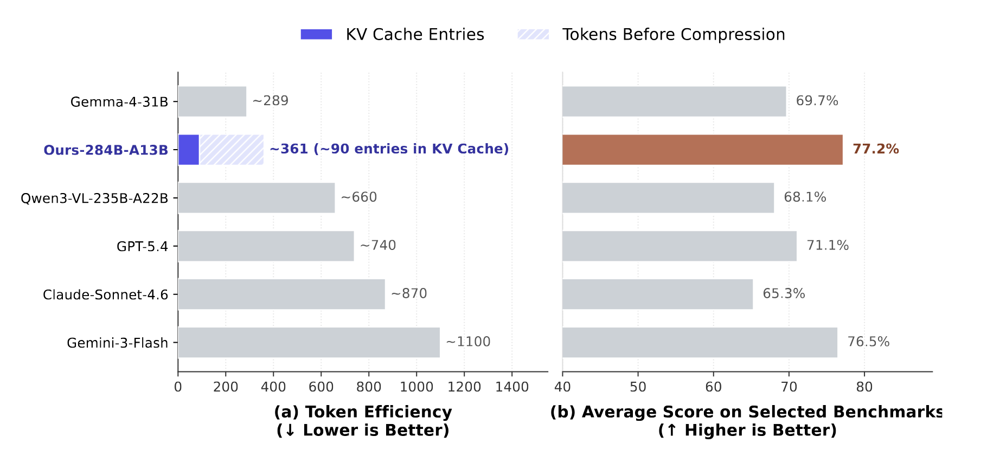
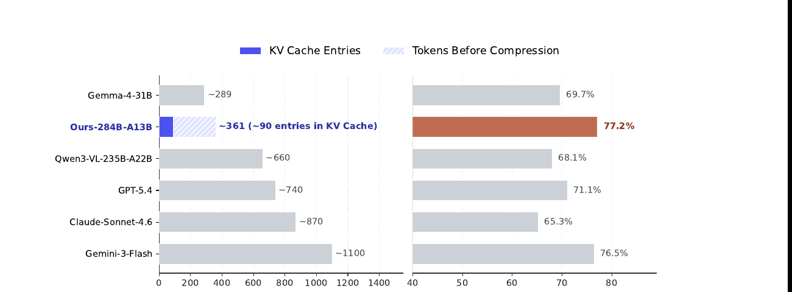

Thinking with Visual Primitives: 推理时一边思考一边 "用手指点"

1. 出发点 (Motivation)
MLLM 的 Chain-of-Thought (CoT) 在 LLM 那一侧已经成熟,但纯语言空间的推理对视觉问题有个根本缺陷。
近几年研究让 MLLM "看更清"——高分辨率 cropping、Thinking with Images——这是在补 Perception Gap。但 paper 指出: 即使感知完美,模型在密集计数 / 拓扑推理 / 多步空间推断时仍然 "逻辑塌方"。
诊断 = Reference Gap: 自然语言天生不擅指代连续视觉空间中的精确位置。"the third dog from the left" 这种表述在密集场景下不可靠,语言"思想"会跟它指代的视觉实体 desync,导致 cascading hallucinations。
类比: 人类做这类任务时用手指辅助 — 数密集物体时一个个指着数,走迷宫时手指跟着路径划。这种 deictic pointer 是低成本的认知工具,把抽象思路锚到具体物理坐标。
Thinking with Visual Primitives 的主张: 让 MLLM 也能这么做。具体: 把 points 和 bounding boxes 提升为"最小思维单元 (minimal units of thought)",穿插进 CoT 推理链。模型一边推理一边 "点":
The user wants me to count men. Looking at the group, I see:
<|ref|>the men<|/ref|><|box|>[[13,228,116,714], [106,226,202,707], ...]<|/box|>
This covers ... 25 in total.
与早前 "grounding 作为后验验证" 的工作不同 (如 RepFormer / VR-FORM 把 bbox 用作 perception 增强的辅助):
- 它们: bbox 是 final output 旁边的附属 evidence
- 本文: bbox / point 是 thinking 过程的主干 — 模型在思考时不断 emit visual primitives,而不是事后补一个
这条路解决拓扑推理(迷宫,路径跟踪)和密集计数 — 这些场景里语言根本无法精确指代。
2. 方法 (Method)
2.1 架构 + 视觉 token 极致压缩
核心是 DeepSeek-V4-Flash (该团队同期发布的另一个工作 deepseek-v4-2026):
- 总参 284B,激活 13B,MoE 架构
- 关键能力 = Compressed Sparse Attention (CSA): 把每 \(m\) 个 visual token 的 KV cache 压缩成 1 entry
Visual Encoder = DeepSeek-ViT: 内部自研,支持任意分辨率。流程:
- 14×14 patch tokenizer → patch tokens
- ViT 输出后 3×3 spatial pooling (9 个相邻 patch token 沿 channel 维拼成 1 个)
- LLM 内部 CSA 把每 4 个 visual token 的 KV 压成 1 entry
端到端举例 — 756×756 输入图:
- pixel 数: 571,536
- ViT patch token (14×14 grid): 2,916
- 3×3 pooling 后送给 LLM: 324 (实际限制 81-384 区间,所以这里是 324)
- CSA 压缩 4×: 最终 KV cache 81 entries
- 总压缩比 = 571,536 / 81 ≈ 7,056×
这种激进压缩是这个范式能 work 的关键 — 否则把 bbox/point 穿插进 CoT 会让 sequence 爆炸,反而更慢。

2.2 Visual Primitives 的定义
两种原子: bounding box + point
- Bounding box
<|box|>[[x1, y1, x2, y2], ...]<|/box|>: 坐标归一化到 0-999 整数。配<|ref|><|/ref|>包对象名 - Point
<|point|>[[x1, y1], ...]<|/point|>: 不带对象名,用于抽象引用 (轨迹 / 拓扑 / 中心点)
为什么选 bbox 为主而非 point ?
- Determinism: bbox 紧贴物体边界,annotation 相对确定; point 在物体内部哪都行,无 strict GT
- Generalizability: bbox = 2 个 point,训出 bbox 模型可零成本退化到 point;反过来不行
- Information: bbox 携带几何信息 (宽高比例),point 只有位置
2.3 Pretraining 数据构建 (技术报告最有 hands-on 价值的一节)
40M 高质量 box-grounding 数据,自建。流程:
HF + 多网站爬虫
↓
97,984 box-grounding 数据源
↓ Step I: Semantic Review (MLLM-judge)
↓ • 丢掉 "0/1" 这种无语义机器码 label
↓ • 丢掉 "MyRoommate" 这种私有 entity
↓ • 丢掉 "OK"/"NG" 这种主观抽象 label
↓ → 43,141 source 留下
↓ Step II: Visual-Geometric Review
↓ • Severe miss recall >50% → 丢
↓ • 严重截断 bbox → 丢
↓ • >90% area mega box → 丢
↓ → 31,701 source
↓ Per-category 采样 (N=1000) + 全局 dedup
↓
40M 高质量样本
两阶段 LLM-judge 过滤是这篇 paper 工程上最 hands-on 的贡献 — 公开 OD 数据噪音大,自建一套 standard pipeline 把"语义对齐度 + 几何质量"两个维度都管起来。
统一格式:
- Box query:
Locate TARGET in this image and report its bounding box coordinates. - Box response:
<|ref|>TARGET<|/ref|><|box|>[[x1,y1,x2,y2],...]<|/box|> - Point query:
Help me find TARGET. Give me the center point for each instance. - Point response:
<|point|>[[x1,y1],...]<|/point|>(不带 ref)
两个值得抄的 curation 取舍:
- 通用多模态数据坚持用 web 爬取,拒绝模型蒸馏合成(如合成 caption),也不让 LLM 改写数据内容 —— 避免把其他模型的偏见 / 幻觉一并继承进来。
- 专项 primitive 能力另外补了 6 个高质量公开集:PixMo / Molmo(Deitke et al.)、Open Images V4(Kuznetsova et al.)、COCO(Lin et al.)、Kosmos-2 的 grounding 数据(Peng et al.)、Objects365(Shao et al.)、V3Det(Wang et al.),统一转成上面的
<|ref|>...<|box|>/<|point|>格式。
Pretraining 全程消耗 trillions of multimodal tokens (与 base LLM 同尺度)。
2.4 4 个 Cold-Start 任务
Post-training 之前需要 cold-start 数据 bootstrap visual primitives 推理风格。4 个任务:
| 任务 | 样本数 | 难点 | 关键数据来源 & 合成方式 |
|---|---|---|---|
| Counting (coarse + fine) | ~10k | 密集物体计数易丢漏 | 粗:聚合多个 dense detection 集 —— CARPK(无人机车辆)、OmniCount、Open Images、CrowdHuman、Objects365、VisDrone、病理/细胞密集检测集;细:基于 GQA scene-graph 自造问题。MLLM 按"意图分析→批量 grounding→求和"生成 thinking,严格校验框与元数据坐标/语法/计数全一致;含 count=0 负样本 |
| Spatial Reasoning + VQA | 9k | 多 hop 关系推断 | 自然:GQA 图 + scene graph;合成:CLEVR 工具链(3D 坐标投影成 2D box 做监督)。含负样本(faithful refusal) |
| Maze Navigation | 460k | 拓扑可达性,需 DFS + 回溯 | 程序合成:DFS / Prim / Kruskal 生成迷宫;3 种拓扑(矩形 / 同心圆环 / 六边形蜂窝)+ 可解 & 不可解;难度靠网格大小控制;point 标 DFS 前探 + 回溯 |
| Path Tracing | 125k | 交叉曲线 disambiguation | Bézier 曲线合成:统一线宽 + 去颜色捷径,逼模型靠曲率连续性;端点不与他线重叠(违反则重生成);thinking 为沿曲线采样的 point 序列(曲率大处加密) |
冷启动总量 ≈ 604k(10k + 9k + 460k + 125k),其中迷宫 / 路径追踪几乎全靠程序合成,计数 / 空间推理则在公开集上用 MLLM 合成 thinking + 规则校验。所有冷启动样本的 thinking 里都嵌可验证的 primitive 序列,不是自由文本。
每个 cold-start 样本的 thinking content 都包含可验证的 visual primitive 序列, 不是普通自由文本。Counting 例子 (Fig 3):
1. Deconstructing the query: count men.
2. Sweeping the photo:
<|ref|>the men<|/ref|><|box|>[[13,228,116,714], [106,226,202,707], ...]<|/box|>
3. Tallying: 4+9+8+2+2 = 25
Response: 25 men.
迷宫例子 (Fig 5) — 用 point 标 DFS 探索轨迹:

2.5 Post-Training: 4 阶段 + 3 类 Reward Model
Stage 1: Specialized SFT —— 70% general MM + 30% specialized data。分开训 box (FTwG) 和 point (FTwP) 两个 specialized model — 数据少时混训会 mode conflict。
Stage 2: Specialized RL (GRPO) —— 各自 RL fine-tune,3 类 reward model:
- Format RM (rule-based 0-1): bbox 语法 / 去重
- Quality RM (LLM-judge 0/0.5/1): 内容是否冗余 / 思考是否前后矛盾 / 是否 reward hack
- Accuracy RM (task-specific):
- Counting: 平滑指数衰减 \(R = \alpha \exp(-\beta |\hat y - y| / (|y| + 1))\) (\(\alpha=0.7, \beta=3\))
- Spatial / VQA: LLM-GRM 同时判 thinking 内容 + 最终回答, 取平均
- Maze: 5 项加权组合 — 因果探索进度 / 完整性 / 墙违规惩罚 / 最终路径有效性 / solvability 正确性
- Path tracing: 轨迹准确性 + 终点 hit + ...
关键 trick: cold-start 中的 visual primitives 已 ground-truth-verified,所以 RL 阶段不对 primitives 本身做监督 — 只看最终答案和质量。这让 RL 数据要求大幅放宽 (图+问题+答案就够,不需要 box 标注),数据规模可大幅扩张。
Stage 3: Unified RFT(拒绝采样 / rollout 微调,⚠️ 不是 RL) —— 这里的 RFT 是 Rejection-sampling / Rollout Fine-Tuning,不是 "reinforcement fine-tuning"。做法:让两个专家 FTwG、FTwP 在 data pool 上 rollout 生成轨迹(套用前面的难度分级),汇成一份更大更杂的 RFT 数据集;然后从 base 预训练模型重新初始化(不是把两个专家做权重平均!),按与 SFT 相同的配置训练,得到统一模型 \(\mathcal{F}\)。换句话说,"合并"发生在 数据层面(两个专家的 rollout 数据并集),而非权重层面。
Stage 4: On-Policy Distillation (OPD) —— RFT 后的 \(\mathcal{F}\) 在各自专长域仍略逊于两个专家,于是用 OPD 把专家本事蒸进 \(\mathcal{F}\):student(\(\mathcal{F}\))用自己生成的 on-policy 轨迹,以 KL 散度 + 全词表 logit 蒸馏(full-vocabulary logit distillation)对齐 两个 teacher(FTwG、FTwP) 的输出分布,得到最终交付模型。
术语澄清:RFT 在本文 = 拒绝采样微调(专家 rollout 数据 → re-init from base → SFT 式训练),不要与 "reinforcement fine-tuning" 混淆。Stage 2 的 RL 用的是 GRPO,Stage 3 才是 RFT,二者是不同阶段、不同方法。
2.6 训练流程总览(谁→从谁初始化→什么方法→什么数据)
整条流水线是 "先分科训两个专家 → 数据层面合成一个统一模型 → 蒸馏提质"(论文称 train specialists—then—merge)。底座始终是 DeepSeek-ViT + DeepSeek-V4-Flash(LLaVA 式结构)。
| 阶段 | 训练哪个模型 | 从什么初始化 | 训练方法 | 用什么数据 |
|---|---|---|---|---|
| 0. 预训练 | 整个 MLLM(ViT+投影+LLM) | DeepSeek-V4-Flash + DeepSeek-ViT 底座 | 标准自回归预训练(NTP) | trillions 多模态 token + 自建 40M box-grounding + 6 个公开集 |
| 1. 专项 SFT | 两个专家 FTwG(框)/ FTwP(点) | 均复制自阶段 0 预训练模型 | 监督微调(SFT) | 70% 通用多模态 + 30% 专项冷启动 |
| 2. 专项 RL | FTwG、FTwP 各自 | 各自的 Stage1 SFT 结果 | GRPO + 3 类 RM(Format/Quality/Accuracy) | 仅"图+问题+答案"(不监督 thinking 里的 primitive) |
| 3. Unified RFT | 1 个统一模型 \(\mathcal{F}\) | ⚠️ 重新初始化自 base 预训练模型 | 拒绝采样微调(RFT),SFT 同配置 | 两专家 rollout 生成的统一数据集(难度分级) |
| 4. On-Policy Distill | 统一模型 \(\mathcal{F}\)(最终版) | Stage3 的 \(\mathcal{F}\) | OPD:on-policy + KL 全词表 logit 蒸馏 | \(\mathcal{F}\) 自采样轨迹,teacher = FTwG + FTwP |
3. 结论 (Key Findings)
⚠️ 没有 detailed benchmark 表 — README 和 PDF 都是定性 + Fig 1 单张柱状图。具体数字只能看 Fig 1。
Fig 1 右边:
- Ours (~361 token / 90 KV cache entries) 平均 77.2% — 7 个 (counting + spatial reasoning) benchmark 平均
- Gemma-4-31B (289 entries) 69.7%
- Qwen3-VL-235B-A22B (660 entries) 68.1%
- GPT-5.4 (740 entries) 71.1%
- Claude-Sonnet-4.6 (870 entries) 65.3%
- Gemini-3-Flash (1100 entries) 76.5%
核心信息:
- 选定 benchmark subset 上 (paper 自报子集,不是 overall capability) 跟 frontier models 持平或反超
- Token efficiency 是 GPT-5.4 的 ~1/8, Claude-Sonnet-4.6 的 ~1/10
- README 明确说 "scores cover only a subset of evaluation dimensions that are directly relevant to the research focus" — 不是 overall capability claim
4. 实现细节 (Implementation Notes)
⚠️ 代码 + 权重 + 数据 0 release (截至 2026/06/04)。Repo 只有 PDF + README + Makefile,没有 src/。News 说"模型权重将集成进 foundation model 未来释出",benchmark 子集 + cold-start 数据子集 "近期" release。
- Visual token range 81-384: 限制 ViT 输出最低 81、最高 384。低于的 resize 上去,高于的 resize 下来。保持纵横比。这套约束让 KV cache 可控。
- CSA 每 4 个 visual token 压成 1 entry: 这是 base LLM (DeepSeek-V4-Flash) 提供的能力,不是这篇 paper 设计。Paper 把这个能力用对了 — 不再用大量 visual token 撑出 perception 质量,而是用 primitives 主动 ground。
- 未提及 token budget 上限: 推理时 visual primitive 输出 (thinking 阶段 emit 多个 box) 占多少 token?paper 没给统计。这跟 efficiency claim 直接相关,缺失。
- 3 类 RM 缺梯度细节: Quality RM 是 LLM-judge,LLM 用哪个?GPT-4 还是自家?Reward 怎么聚合 (sum / mean / hierarchical)?Paper 没说。
- Cold-start 数据规模 460k maze 是 4 个任务里最大: 因为 maze 推理需要长 DFS chain,需要 dense supervision。Path tracing 125k 次之。Counting 和 spatial 反而只有 10k 和 9k — 这俩任务的 visual primitives 用法相对简单 (一次 grounding 就够),不需要多步规划。
- 数据"两阶段 LLM-judge 过滤" 是 reproducible 的: paper §2.3 写得很细,可以拿同样思路套用到任何 OD 数据上。这是这篇 paper 工程上最可复用的部分。
- paper 用
<|ref|><|/ref|><|box|><|/box|><|point|><|/point|>几个 special token: 跟 locate-anything-2026 (<box></box><ref></ref>) 几乎一模一样的约定,但 LocateAnything 是 box 当 output,Thinking-VP 是 box 当 thinking。两者不冲突,实际可以同一模型同时支持。
5. 批判性总结 (Critical Assessment)
5.1 优点
- Reference Gap framing 是真的有洞见: "MLLM 拓扑推理 / 密集计数失败的根因不是 perception 而是 reference" 这点跟同期"提高分辨率"主流方向完全反向。一旦你看见这个 framing, 很多失败案例都能用它解释。
- 把 visual primitive 提升为 first-class thought: 跟此前"bbox 是 verification" 截然不同,更像人类用手指辅助思考。这个范式 shift 是这篇 paper 的核心贡献。
- 极致 KV cache 压缩 (7056×): 解决了"加更多 visual content 进 thinking 反而更慢"的 paradox。这个 trick + base LLM 的 CSA 能力对接得很巧妙。
- 数据过滤 pipeline 工程价值高: §2.3 的两阶段 LLM-judge (semantic + geometric) 是这篇 paper 最 actionable 的部分。任何想做 grounding/detection 数据集的人都能直接抄。
- 4 个 cold-start 任务覆盖代表性场景: counting + spatial + maze + path tracing 覆盖了 "需要 visual primitives 才解得了" 的几乎所有典型问题。
- GRPO RL 阶段不监督 thinking 中的 primitives: 这个设计很聪明 — 让 RL 数据规模化的关键。
- token efficiency claim 有硬数字 (Fig 1): 跟 frontier models 横比,数字可信度高 (虽然 benchmark subset 选取本身有 bias 风险)。
5.2 不足 / 疑点
- 代码 + 权重 + 数据 0 release (截至 2026/06/04): 跟 locate-anything-2026 一样的问题。Repo 实际只有 PDF + README。News 说"近期" release 数据子集 + benchmark 子集,但没具体时间。研究价值现在主要是 framing + ideas, 工业可用还远。
- Benchmark subset 这个 caveat 不能忽略: README 和 paper 都明说 "scores cover only a subset of evaluation dimensions". 也就是说: 在 visual primitives 不能帮助的任务上,本模型很可能远低于 GPT-5.4 / Claude / Gemini 这种通用模型。只是某个垂直能力的反超,不是整体反超。
- DeepSeek-V4-Flash 的 CSA 是 prerequisite: 没有 CSA, 这套范式 (大量穿插 visual primitives) 立刻 token 爆炸。这意味着该范式强依赖 base model 的特殊 attention 能力。其他 LLM (Qwen, LLaMA, GPT 系) 不一定有同等能力,可移植性受限。
Stage 3 merge 机制缺失→ 已澄清(本页早期版本曾据博客摘要误判"一句话带过";细读 PDF §2.5.3-2.5.4 后更正):merge 其实说清了 —— Unified RFT 是 数据层面合并(两专家 rollout 出统一数据集、re-init from base、SFT 式训练),OPD 是 on-policy + KL 全词表 logit 蒸馏、双 teacher。真正缺的不是机制,而是 各阶段贡献 / 成本的 ablation(见下条)。另需注意 Stage 3 的 "RFT" 是拒绝采样微调,非 reinforcement(易误读)。- 缺 ablation: 不带 visual primitives 的 baseline (同 backbone + 同 RL 但 thinking 是纯文本) 性能是多少?Paper 没给。Visual primitives 帶来的 lift 到底多大, 没有量化证据。
- Maze 460k cold-start 是真的需要这么多吗: 460k 比 counting (10k) 多 46×。这说明拓扑推理对大量 supervision 很饥饿,可能意味着模型并没"理解" topology,只是大量 memorize。
- 没跟 locate-anything-2026 直接比: Thinking-VP 输出 box 和 LocateAnything 输出 box 是不同 framing (thinking vs final output),但底层格式接近 (
<|box|>token)。两者实际可以同模型支持,但没有 head-to-head 对比。 - token 数 vs KV cache 数概念: README Fig 1 把这两个混着用 (左轴 "Token Efficiency" 然而柱子用 KV cache entries 数)。这点容易误导读者。
- paper 4 阶段后训练流程很重: SFT → RL → Unified → On-policy distill。每阶段细节都有,但总训练成本 + 各阶段 contribution 比例没给 ablation。
- Author list 17 人,DeepSeek 12 人 PKU/THU 5 人: 这是 DeepSeek 的内部项目,跟 V4-Flash 强绑定。不是社区可参与的开放研究,更像产品预热。
5.3 适用 vs 不适用
- ✅ 适用: 想理解"MLLM 推理范式转变"的研究者。Reference Gap framing + visual primitives as thought 是有教育意义的 conceptual move,即使代码没 release。
- ✅ 适用: 做计数 / 拓扑 / 密集空间推理任务的 product/research,即使没法用本模型,可以借用思路 — 让自己的 MLLM 在 thinking 阶段穿插 bbox 输出。
- ✅ 适用: 做 grounding/detection 数据集清洗的工程团队 — §2.3 的 LLM-judge pipeline 是个完整 recipe。
- ❌ 不适用: 想立刻拿来用的人 — 代码权重 0 release。
- ❌ 不适用: 非 DeepSeek-V4 系列的 base model 移植 — CSA 是 prereq,Qwen/LLaMA 没有同等能力。
- ⚠️ 谨慎: 看 benchmark 时记住是 selected subset,不是 overall capability。
5.4 进一步阅读
- 同期 structured-output VLM:
- locate-anything-2026 (LocateAnything) — bbox 作为 final output 一次 forward 出,跟 Thinking-VP 互补 (一个是 output 路径,一个是 thinking 路径)
- rep-forcing-2026 (Representation Forcing) — UMM 里用 representation token 解耦 understanding/generation
- mrt-2026 (Canva MRT) — layout via RoPE positional encoding
- Thinking with images 系列 (paper §1 提到的"Perception Gap"代表): GPT-4o "vision tool calling", Anthropic "computer use", Google "Gemini multimodal CoT"
- Base model: deepseek-v4-2026 (DeepSeek-V4) — 提供 CSA 能力的 base LLM。Thinking-VP 是 V4-Flash 系列的应用之一
- Grounding 作为 verification 的早期工作 (paper §1 引用作为对比): RepFormer, VR-FORM 等 — Thinking-VP 跟这些的本质区别是 primitives 是 thought 不是 evidence
- GRPO: DeepSeek-R1 系列的 RL 算法,跟 Thinking-VP 用同一套
讨论 / Comments
评论托管在本仓库的 GitHub Discussions, 需 GitHub 账号。